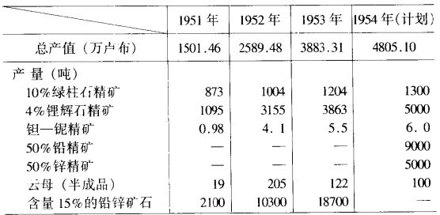
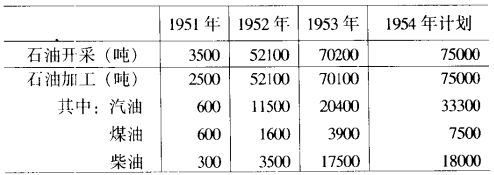
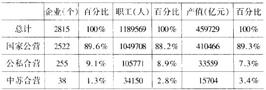

四、开办合股公司
在50年代初的中苏经济关系中，开办中苏合股公司是一件颇为引人注目的事情。有的著作认为股份公司协定表现了苏联的大国沙文主义，从后来毛泽东与苏联大使的谈话记录看，中国领导人对股份公司也颇有不满，似乎开办合股公司是苏联强加给中国的。这样说是不公平的，也不符合历史事实。
苏联对于在中国开办合营股份公司的事很有兴趣，早1939年9月苏联就与国民党政府共同组建了以哈密-阿拉木图为定期航线的中苏航空公司（有效期10年），1949年又提出要签订新疆金属和石油股份公司的协定。到1950年初周恩来率代表团到达莫斯科之前，苏方已经起草了苏中航运股份公司、苏新金属公司、苏新石油公司的议定书及管理东北地区苏中合营股份公司的决议，正如周恩来所说，“苏联对经济合作颇感兴趣”。这些都是事实，说明苏联从其经济利益出发急于建立几个中苏合股公司。
但同时必须看到，新中国领导人对于合股公司的事情同样是积极的，当米高扬在西柏坡时任弼时就提到了苏中经济联合体和租让企业的问题。1950年1月2日，刘少奇致电正在莫斯科访问的毛泽东说：彭德怀带来了苏联与国民党政府关于在新疆设立金属和石油两股份公司的协定草案，要求中央人民政府与苏联政府亦签订大体相同的协定草案，“以便利用苏联资本开发新疆资源，发展新疆生产”。刘少奇认为此事可行，只是经营期限应从45年缩短为20或25年为宜，还提出不只在新疆，在中国其他地方也可能合办这种企业。刘少奇与在京领导人商议后建议毛泽东亲自向苏联提出这一要求。应该说，中苏合办股份公司是双方的共同要求，也是对双方都有利的。
然而，当中苏关于新疆石油和有色金属两个合股公司协定的消息发布以后，不仅西方国家的报纸纷纷指责中苏石油和金属两公司协定是“苏联吞并新疆的行动”，是最卑劣的“经济帝国主义”行为，而且在北京的学生当中也“引起了极大的波动”，他们“怀疑这两项协定是否要损害中国主权。许多青年团员提出质问，要求解释。甚至有骂苏联侵略、人民政府卖国者。并有要求退团和向人民政府请愿者。”西方的指责自有其政治目的，而国内学生的骚动，现在看来则是一种狭隘民族主义情绪的流露，也是对利用外资等现代经济运行方式缺乏了解的表现。实际上，问题并不在于股份公司的形式，而要看协定的内容是否公平互利。
中苏股份公司主要是指1950年3月27日签订协定的中苏金属公司、中苏石油公司和中苏民航公司，以及1951年7月28日签订协定的中苏造船公司。根据协定，中苏双方股份各占50%，公司领导职务也是双方按期轮换，股份公司赢利的20%应作为税款交给中国政府，而苏联有权出口的50%产品还应向中国海关交纳关税。对比国民党政府时期的中东铁路协定、中苏航空公司协定以及苏联提出的中苏金属和石油公司的条款，在公司实际管理权和交纳关税等方面有了很大改进。尽管从现在的观点看，苏联坚持平分股权和较长的期限显然是出于对自身经济利益的考虑，但并没有损害中国主权的意图和表现。据参加股份公司谈判并担任文字翻译的伍修权回忆，会谈中双方都强调了真诚合作、平等互利和平权合股的原则，“我国保持独立而不依赖，苏联尽力帮助而不剥削”。
事实上，这些合股公司的建立对中国的经济恢复和发展起到了极大的带动作用。1955年2月23日苏联驻华使馆曾向国内提交了一份关于上述4个中苏股份公司的详细情况报告，反映了这些公司运营的基本状况：
中苏金属公司的业务是在中国新疆地区普查、勘探、开采和加工有色金属和稀有金属。协议规定公司股份资本2800万卢布，双方股份额均等。后来双方协商将公司股份资本增加到1亿卢布，每方资本5000万卢布。公司职工共8924人，其中苏方400人。公司经营正常，产量逐年增长（见表三）。
表三 中苏金属公司主要产品产量

注：总产值按1951年计划不变价格计。
由于建设初期地质勘探和其他公用设施投入较大（占3年总支出的52.3%），且冲销成本数额增加，1953年又开缴营业税（184.2万卢布），以及矿石中金属含量下降等因素，该公司经营成本较高，特别是自1953年9月1日起人民币对卢布比价提高了26%，而苏联购买的公司产品是以卢布支付的，从而相应地降低了以人民币计算的产品出厂价格，导致1953年公司亏损686.8万卢布。此外，苏方的亏损还要额外加上支付苏方工作人员生活补贴费用719万卢布。不过，除去汇率变动的因素，这种亏损应该说是正常的。所以，苏联使馆的结论是：金属公司目前已经具有可靠的原料基地，并且继续发展生产的前景美好。
中苏石油公司的业务是在新疆勘探、开采原油，并提炼各种工业用油。公司协定总资本4600万卢布，后经换文增加到2亿卢布。公司职工5603人，其中苏方人员357人。在苏联帮助下，中国石油工业从无到有，在不到两年的时间里便迅速发展起来。最初只有独山子一地，仅有职工100多人，两口油井日产原油2-3吨，炼油厂每日处理原油7吨左右。到1952年中，采油点已扩展到南疆和北疆十几个地区，共有油井10口，日产原油200吨，炼油能力也提高到日处理250吨，石油产品全部在中国国内销售。1951-1953年生产情况如表所四示：
表四 中苏石油公司主要产品产量

表中数字显示，石油公司产量不仅逐年增加，而且涨幅较大。由于石油产品全部内销，不受汇率影响，所以公司经营是赢利的。如果不计无效钻探的费用和苏方人员的补贴，随着产量增加，公司获得总利润1951年为52万卢布，1952年为66.4万卢布，1953年为239.5万卢布。另据中国报纸当时的报道，与1951年比较，1953年的钻井生产增长6倍，勘探面积扩大10倍，原油产量增长18倍以上。公司还培养出了2000多名优秀的中国技术人员和技术工人。
中苏民航公司经营的航线包括北京-蒙古-伊尔库茨克，北京-沈阳-赤塔，北京-乌鲁木齐-阿拉木图，以及1953年底投入运营的乌鲁木齐至喀什新航线。公司股本确定为4200万卢布。公司职工896人，其中苏方236人。自1950年7月1日至1953年12月31日公司运营期间共获利536.72万卢布，其中苏联分得利润228.5万卢布，中方获利润和税收共计308.22万卢布。航空公司对中国的最大帮助是培养了中方的场站管理和地勤技术人员，截至1953年底，公司在经营期间总共从中国公民中培训出244名专业人员，其中部分航空机械员和无线电专业人员后来被调到中国民航工作，以弥补中国民航严重缺乏干部和经验之不足。
成立中苏造船公司的目的是建造和修理船只及其他水上工具。公司协定股本1.4亿卢布，公司职工9400人，另有78名苏联专家。造船公司虽然成立较晚，但形成生产能力很快，1952年便完成了生产计划额定4960万卢布的94%，造船54艘，总排水量为11000吨，并大修、中修和小修船只18艘，完成了中方180万卢布的定货。1953年则完成了计划定额5000万卢布的105.6%，造船19艘，总排水量10000吨，修船14艘，完成了中方定货3200万卢布。
当然，在经营过程中，中苏之间确实也存在一些经济利益方面的矛盾和分歧，例如中苏金属公司的投资和估价问题。按照协定，公司股本2800万卢布，中苏各应投资一半。苏方以机器设备作为投资，中方则以矿产、地皮、房屋及当地建筑材料作价入股。1951年公司成立时，苏方投资计算价值为2200万卢布，而对中方投入的房屋、机场、草场等依照当地价格仅作价60万卢布。作为主要投资构成的矿产，因中方毫无经验，无法估价。此时，苏方坚持要将协定附图中所指定的矿产及所需地段和现有房屋等总共作价1400万卢布。换句话说，中方不仅要将该地段30年内开采的全部矿石算作中苏共有资产，而且还要再投资现款800万卢布。苏方如此苛刻，以至自认外行的中方当事人也感到如此计算中国太吃亏，要求中央政府定夺。此外，在具体工作中也有矛盾。如在金属公司喀什矿务管理处，由于中方管理人员多系部队转业干部，既不懂技术，又不会俄语，而翻译人员也极为缺乏（全矿区只有一名），很难与苏方专家和干部合作，甚至产生了“没有看见苏联同志先进经验”的错误想法。同时，由于同样原因，苏联专家有事也很少与中方商量，以至造成双方管理人员的不合。
此外，苏联驻华使馆党组书记瓦日诺夫在1954年2月25日给苏共中央的报告也反映了股份公司苏方人员存在的许多问题。比如苏方代表在公司管理工作中违反平等原则，长期占据公司及其管理机构的领导职位而不按规定进行轮换。苏方领导人常常不理睬自己的中方副手，有时还干预中方的职权，不向中方工作人员传授自己的全部工作经验或隐瞒地质勘探结果。破坏平等原则的另一个表现是在公司的许多企业里，财务和其他方面的报表、指令都只使用俄文。苏方领导人选用干部任人唯亲，不是选用精通业务的当地干部，而常常让苏联专家的妻子顶替。还有，苏方有关机构的官僚主义作风也给企业经营造成了损失，提供给公司的设备和材料往往不考虑实际需要，例如，给阿尔泰矿山管理局运来的T-45型传送带和电力机车在当地条件下根本不能使用，公司仓库里积存了大量布匹和皮革。如此等等。
不过，这些大多不是苏联的政府行为，更不能证明合股公司的形式不可取。总体说来，建国初期的几个合股公司在经营上是成功的，对中国经济恢复所起的作用也是有目共睹的。按企业资产计算，除中苏航空公司外的3家股份公司共有资产4.4亿卢布，合人民币约5.86亿元，而1950-1952年全国新增工业固定资产仅为19.3亿元，可见这几家股份公司在工业发展中的重要性。同时，从经济效益上讲，中苏合营企业也是比较突出的。除4个中苏股份公司外，建国初期还有一些中苏合营企业。1949年底共有中苏合营企业109个，根据中苏关于中长铁路、旅顺口及大连的协定，在1950年间大部分企业已经移交给中国，到1950年底还有38个。据表五 显示，在1950年底国营工业企业的整个发展中，中苏合营企业的效益最好，其平均产值为413.26亿元，大大超过了国家公营（162.75亿元）和公私合营（131.60亿元）企业。
表五 1950年底国营工业企业发展概况

注：工业产值按1950年6月企业不变价格计。
这里还应提及的是建国初期苏联向中国移交的企业和资产。虽然移交是根据中苏协定办理的，说不上是对中国的特别援助，但这些企业和资产对中国经济恢复和发展也有相当重要的影响。1950年苏联政府将大连市苏联代管或租用的财产、苏联经济机构从日本所有者手中获得的财产以及过去北京兵营的全部房产无偿移交给中国，其中包括47个工厂、11所电影院、188处宅舍、33个仓库、23处地产，共302处。移交财产总数比协定签订时苏联照会所列清单还多18处。而且，苏联在移交前还为以后照常生产作了重要准备。如中苏合营的远东电业公司，所属工厂从12个扩大到21个，工人增加了4.5倍，产品种类也由原来的十几种增加到几百种。某机械厂的设备比建厂初期增加了200%，生产总值提高了439%。大连修造厂的生产率也比战后初期提高了36倍。对中国建设尤为有益的是这些企业培养了大批中国技术人才，仅上述3 个工厂就培养出技术人员4650余名。
从性质上讲，中国长春铁路公司也属股份公司，但由于历史原因，签订协定时只说是中苏共同管理，称为合办公司。苏联移交的中长铁路包括基本干线，连同服务于该路的土地、铁路建筑与设备、机车车辆、发电站、电话所与电报所、通讯器材与通讯线路、铁路辅助支线、公务技术建筑物及居住建筑物、经济组织、附属企业及其他企业与机构，以及在中苏共管期间购置、恢复和新建的财产与1950-1952年固定资产清查登记时查出的财产，总资产共达22.8亿元，其中固定资产22.4亿元。更为重要的是中长铁路为中国铁道事业的发展提供了经验。从1950年5月开始工作到1952年12月无偿移交给中国，中长铁路货运量增长53.3%，劳动生产率提高56.8%，运输成本降低27%。公司利润则逐年增加，1951年比1950年增长110%，1952年又比1951年增长97%。同时为中国培养出39138名技术和管理干部。铁道部提出了全国铁路必须学习中长路的号召，先后选派上万名干部职工去中长路参观学习。按照铁道部长滕代远的说法，在中苏合办的32个月中，中长路以其“突出的效率高、成本低、利润大的模范行动成为全国铁路”的“旗帜和榜样”。而中长铁路的全部经验贯穿了体现在1500多名苏联专家身上的“政治品质、技术修养和经验知识融合为一体的完整的社会主义思想”。